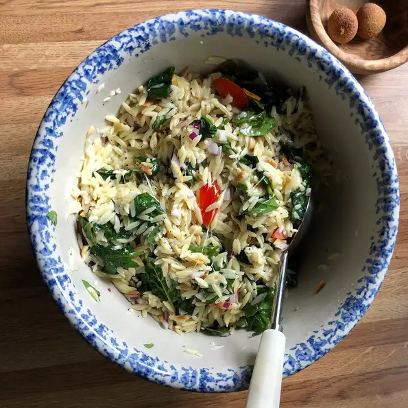

Spinach and Orzo Salad

Description
A light, easy-to-make salad that's pleasing to the palate.
ingredients
- 1 (16 ounce) package uncooked orzo pasta
- 1 (10 ounce) package baby spinach leaves, finely chopped
- ½ pound crumbled feta cheese
- ½ red onion, finely chopped
- ¾ cup pine nuts
- ½ teaspoon dried basil
- ¼ teaspoon ground white pepper
- ½ cup olive oil
- ½ cup balsamic vinegar
Steps
- Bring a large pot of lightly salted water to a boil.
- Add orzo and cook for 8 to 10 minutes or until al dente; drain and rinse with cold water.
- Transfer to a large bowl and stir in spinach, feta, onion, pine nuts, basil and white pepper.
- oss with olive oil and balsamic vinegar.
- Refrigerate and serve cold.
Reference